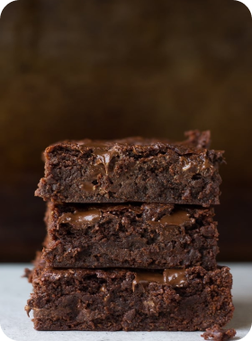
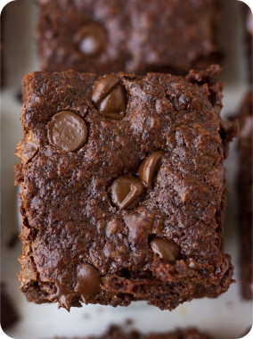
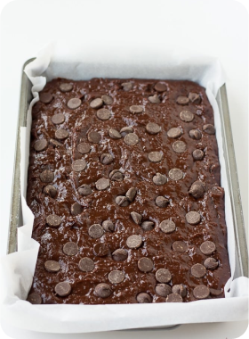
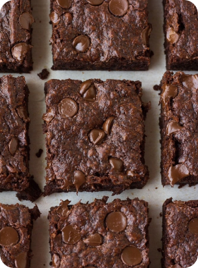

I create vegan recipes that are easy to cook, made with simple ingredients and most importantly – taste incredible! Everyone is welcome.
This really is the Best Ever Vegan Brownies Recipe! Fudgy, gooey, perfect squares of chocolate that cut easily and are easy to make. You'll never buy a boxed brownie mix again!
In the last two days, I’ve made three batches of vegan brownies. That’s right, three. A few weeks ago, I tried some other recipes I was playing around with. All in an attempt to create the most perfect vegan brownies recipe in the world. It has been such a struggle you guys! (And yes I have a freezer FULL of brownies)
All of the recipes were edible (I mean, come on, it’s chocolate people!), but NOT the brownie perfection I was looking for. Either they were too fudgy, or too cake-like (my biggest peeve). Or one batch that cooked fine on the outside but wouldn’t fully cook near the middle.
I had to do some serious brownie research, read about ingredients, what makes a brownie cake-like, what makes them more fudgy, how to create the right balance for what I was looking for, and then think about the best vegan swaps for the result I wanted to achieve.
Finally, just a few days ago, I made one more batch of vegan brownies, after carefully creating the recipe on paper. I was SO excited as the batter tasted incredible, and after baking they looked good in the pan. Still having doubts, I let them cool a bit and then removed them from the pan and sliced them slowly.
When I looked inside and took the first bite, I knew, I had finally created the PERFECT Vegan Brownies Recipe! They are thick and hold together when you slice them. Fudgy, but not overly so, chewy, rich, ooey-gooey and full of chocolatey goodness. No one would guess they’re vegan!
I used Trader Joe’s semi-sweet chocolate chips because they happen to be vegan and are quite inexpensive. It can be difficult to find chocolate chips that don’t contain dairy, so just check the ingredients list. Enjoy Life is a good brand and you can order them on Amazon. You can also use your favorite chocolate bar and chop it into pieces.
I used Trader Joe’s unsweetened cocoa powder in this recipe, Hershey’s unsweetened is also a good option. I would not recommend you use a dutch cocoa powder, as you will get different results.
If you are making vegan brownies for a party or to serve to others, it’s important to follow a couple of steps to get really nicely cut brownies. This is true whether they are vegan brownies or not!
It is helpful to line your pan with parchment paper that hangs out the sides for easy removal. After baking, let the brownies cool off for 15 minutes in the pan, then lift them out of the pan with the parchment paper and let cool 15-30 minutes more on a cooling rack. The longer you let them cool, the easier and cleaner cutting will be.
To cut, use a big, heavy knife. Run it under hot water for 30 seconds, dry it quickly and cut the brownies. Clean off the knife in between cuts, and you will have clean brownie squares.